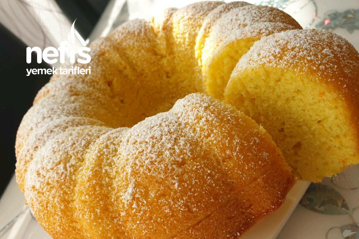

Kaç Kişilik:6-8 Kişilik | Hazırlama Süresi:20dk | Pişirme Süresi:50dk
Portakallı Kek Tarifi İçin Malzemeler
- 1,5 su bardağı toz şeker
- 3 adet yumurta
- Yarım su bardağı ay çiçek yağı
- 1 su bardağı süt
- 1 su bardağı taze sıkılmış portakal suyu
- 1 adet portakalın rendelenmiş kabuğu
- 1 paket kabartma tozu
- 3 su bardağı un
- 1 kahve kaşığı tarçın
Portakallı Kek Tarifi Nasıl Yapılır?
- Portakallı kek hamurunu hazırlayalım. Portakallı kek yapmak için 1,5 su bardağı toz şekerle 3 adet yumurta çırpılır.
- Yarım su bardağı ay çiçek yağı, 1 su bardağı süt eklenerek çırpılır daha sonra taze sıkılmış 1 su bardağı portakal suyu katılır ve 3 su bardağı un azar azar ilave edilirken 1 paket kabartma tozu da eklenir.
- Son olarak da 1 adet portakalın rendelenmiş kabuğu kek hamuruna karıştırılır.
- Hamuru kek kalıbına boşaltalım. Margarinle yağlanmış kek kalıbına hamur boşaltılır. Boza kıvamında elde edilen kek hamurunun üzerine 1 kahve kaşığı tarçın serpilir.
- Kekimizi fırına sürelim. Önceden ısıtılmış 150 derece fırında 50 dakika pişirilir.
- Servis edelim. Portakallı kekin üzeri pudra şekeri ile süslenir. Soğuduktan sonra portakallı kekimiz servise hazır.
Afiyet olsun.